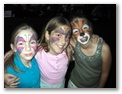

ACS Relay for Life at ASU West

Please help in the fight against cancer by donating now at Steve's or Kathy's relay page. Our fund raising to support the American Cancer Society continues through August 31, 2008.
Attendees had a blast at the 2008 RFL! In addition to all the great entertainment, attendees got to play Rock Band on a 12-foot screen, complete with great sound from huge speakers and a real fog machine. Thanks to Ed Knapp and John Fitzsimmons for making that happen!
Thank you for your donation to support the life-saving mission of the American Cancer Society.
Kathy
About This Particular Event
The 2008 RFL is April 25-26, the theme is circus/sideshow, and we plan to have a great time! Click here for more event details at the ACS web site. Stop by early to enjoy the entertainment and light a luminaria in honor, support, or memory of someone affected by cancer.
Better yet, join our relay team now and help raise money for the cause. See Join Me in Making A Difference below if you would like to know more before joining.
If you can't join our team, please donate now to fight cancer at Steve's or Kathy's relay page. See Help Us Fight Cancer by Supporting Relay For Life below if you'd like more information.
Many of you know that my brother and his wife, Steve and Tanya, were students at ASU West and started a Relay for Life there before Tanya's cancer returned and took her life. Every year, Steve and I return to participate, as we know Tanya would have wanted. She would want us to have fun at the relay. She didn't want anyone else to suffer like she did, and she wanted to do all she could to help the American Cancer Society in its efforts to help those fighting cancer now and to help prevent cancer in the future.
Thanks for your help!
Kathy
Join Me in Making A Difference!

Join our team, Tanya's Trixters, now! (Our team is an early bird team.)
Whether it's a friend, a family member, or the neighbor down the street, we all know someone who has been touched by cancer. Many of us are concerned about this disease and want to do something to make a difference. That's why I've decided to take part in the American Cancer Society Relay For Life®. It's an event that brings together the whole community and helps raise funds for the fight against this disease. I know you care about cancer, too, and I'd love for you to join me as part of my Relay team.
At the event, we'll camp out overnight, walk around the track, and meet lots of new people. There is an incredible tribute to cancer survivors and caregivers that starts off the night and a moving ceremony honoring those who have fought the disease. I can truly say Relay is unlike anything else you'll ever do. It's a night full of fun, hope, and remembrance.
You can get more information about Relay For Life and the American Cancer Society by clicking the link below. Won't you join me in this fight?
Click here to view the team page for TANYA'S TRIXTERS.
Help Us Fight Cancer by Supporting Relay For Life!
Donate now at Steve's or Kathy's relay page!
Can you believe that more than 1.3 million new cancer cases are expected to be diagnosed in the United States this year? Those are staggering statistics, but there is hope. Each of us can do something to save lives and help those already fighting this disease. That's why I've decided to take action against cancer by supporting the American Cancer Society Relay For Life® event right here in my community.
Relay For Life is an overnight event that brings our community together to help support the American Cancer Society and its lifesaving mission to eliminate cancer as a major health problem. The Society works hard every day to prevent cancer and save lives by supporting groundbreaking research, affecting public policies that protect us from cancer, and educating people on how to prevent or detect cancer early. The Society helps people with cancer right here in our own community. And our efforts at Relay For Life can help the American Cancer Society to keep working toward a cancer-free future.
I want to invite you to show your support in the ongoing fight against cancer by joining us for this year's event. Please click on the link below for more information, including details on the inspirational Survivors' Lap and the moving Luminaria Ceremony. We hope to see you there! If you can't join us, will you please visit the site and make a donation to support our efforts? Either way, you will make a real difference in the lives of people facing cancer and in the lives of the people who love them. Thank you!
Click here for state fundraising notices and the American Cancer Society's Privacy Policy.
Click here to visit or donate at Kathy's personal page.
Click here to visit or donate at Steve's personal page.
Updated 05-May-2008 01:06 PM